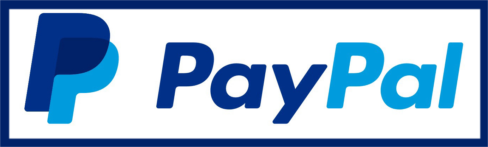

Öffnungszeiten
Montag - Samstag
11:45 - 21:15 Uhr
Sonn- und Feiertage
15:00 - 21:00 Uhr
Jeden zweiten und dritten Montag des monats geschlossen
Biergarten vorhanden!
Speisekarte ansehenWir sind bis einschließlich dem 17.08.2022 im Urlaub!
Loxandra Grill
Oberbruchstraße 62
47807 Krefeld
Zahlungen möglich mit
loxandra-grill@hotmail.com
Festnetz: 02151 643750